Learning Objectives
After completing this lesson, you'll be able to:
- Understand different directory watch trigger options.
- Create a new Automation.
- Configure and use the Resource or Network Directory (updated) Trigger.
- Use a Resources or Network Directory (updated) Trigger to poll an FME Flow Resource.
- Understand when to use Debug and Production modes in Automations.
Resources
Directory Watch Triggers
FME Flow's event-based triggers watch for events in external applications, or within FME Flow, and trigger an Automation when a specific event occurs. Many of these triggers are directory watch triggers where FME Flow watches a directory for an updated file or dataset. The Resource or Network Directory (updated) trigger monitors an FME Flow Resources or network drive (via a UNC path) for file additions, modifications, and deletions. Other common triggers include the FTP Directory (updated), Amazon S3 Bucket (updated), and Dropbox Directory (updated).
The primary use case for these triggers is to monitor a data storage location for any changes. Once a change occurs, FME Flow triggers the Automation to run and passes the file to a workspace to process.
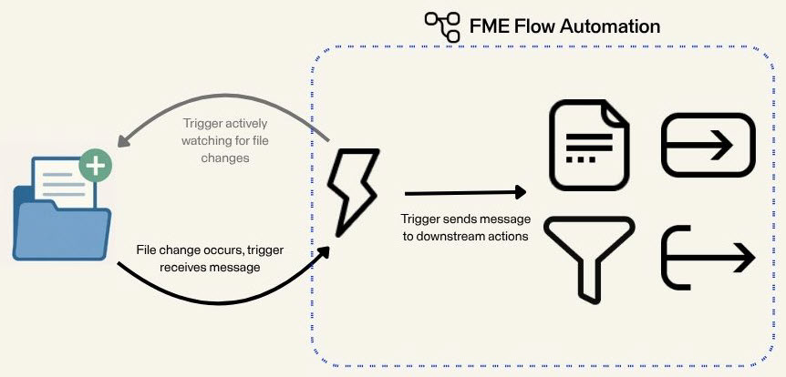

Some of these trigger protocols have corresponding external action protocols where FME Flow pushes files to the data storage location. For a complete list of trigger and action protocols, see our Automations documentation.
Automation Modes and Logs
Once you finish building your Automation, you must start it to begin actively watching for file changes. FME Flow Automations has two running modes: Debug and Production. You should use Debug mode when building and testing your Automation, and then you should use Production mode when your Automation is built and ready to deploy and run without intervention.
Debug Mode
While you build and test your Automation, you should use Debug mode. Click the Debug button in the top toolbar to start your Automation in Debug mode.
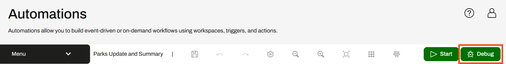
A warning message appears to warn you about running an Automation in Debug mode, and then once you confirm, a message displays in the Automation canvas that it is running in Debug mode. You can access the Automation log file from the message (A) or View Debug Log in the Automations menu (B). While running in Debug mode, FME Flow temporarily stores the Automations log files in the FME Flow database. FME Flow clears the log file each time the Automation restarts and does not store the files permanently.
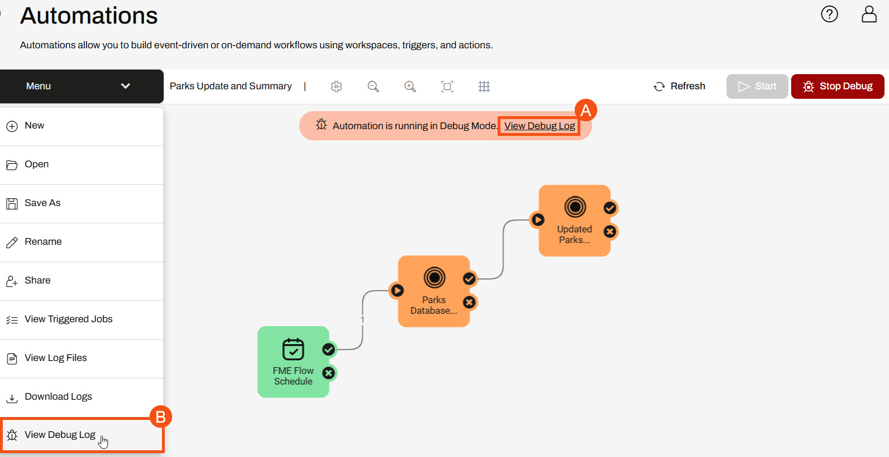
Production Mode
Once you've built your Automation, start it in Production mode by clicking the Start button.
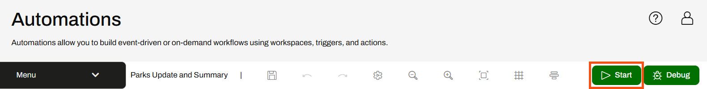
Again, the Automations canvas displays a running message.
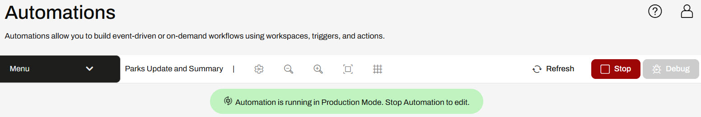
To access the log files for your Automation running in Production mode, use the Automations Menu and select View Log Files or navigate to the logs through Resources > Logs > automations.
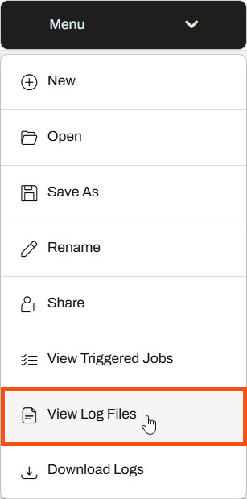
In Production Mode, FME Flow stores the logs for all Automations in Resources > Logs > automations. Additionally, FME Flow combines the logs for all Automations and separates the files by Automation components. For internal and external actions, the log files begin with action_ and for triggers, the log files start with trigger_, and the trigger or action type follows each. For an Amazon S3 bucket trigger, the log file is called trigger_s3watch.log. For an Email external action, the log file is called action_email.log. You may have to filter through the logs to find information about your specific Automation, as FME Flow combines information from all Automations with the trigger or action. The fmeautomations.log file is key and contains metadata about assembling, starting and stopping, and running Automations. FME Flow saves the Production logs and only removes them according to System Cleanup settings.
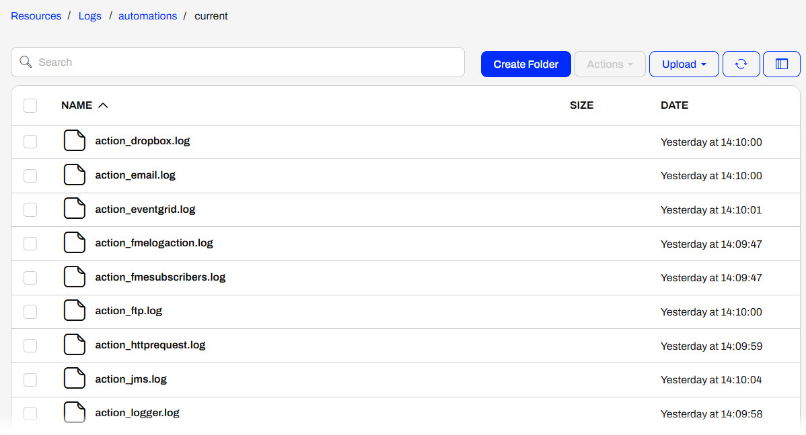
The log files significantly differ between Debug and Production modes for FME Flow Automations. It's essential to understand them to avoid any information loss and ensure you are using the appropriate running mode for your Automations. To summarize the differences, here are a few points:
- You should use Debug mode when building and testing your Automation. FME Flow combines log information into a single log file for the Automation and stores it temporarily in the FME Flow database. FME Flow clears the log file each time the Automation restarts.
- You should use Production mode when you finish building your Automation and are ready to leave it to run consistently. FME Flow separates the log files by nodes—triggers and actions—and stores them according to their trigger or action type. FME Flow combines logs from all Automations containing the same trigger or action.
Exercise

Jennifer, a GIS specialist, is working on a project that updates a geodatabase with new shapefiles of construction updates. She manually checks a Resource directory for new files daily, but knows she will save time and process the updates faster with FME Flow Automation.
Follow along with Jennifer's steps as she creates an Automation that triggers when someone adds or modifies files in a Resources folder.
1) Create Resources Folder
You may skip this step if the BuildingUpdates folder already exists in Resources > Data.
The first step is to create a Resources folder to upload the data. Jennifer opens the FME Flow web interface and navigates to the Resources page. She opens the Data folder and creates a new folder called BuildingUpdates.
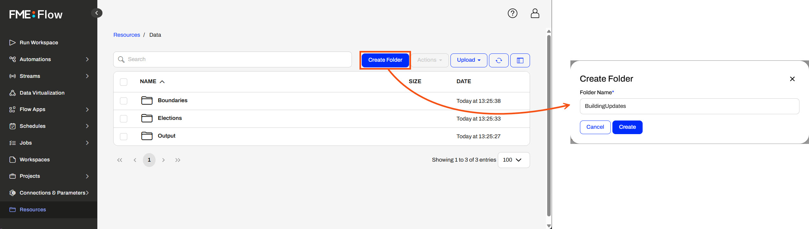
2) Create Automation
Now, Jennifer opens Automations and clicks Create Automation. The Get Started window opens, and Jennifer selects Create New... The Automations canvas begins with a trigger that is ready to configure.

Expand the Menu options and select Hide Guides to remove the Next Action guides.
3) Add Resource or Network Directory Trigger
Jennifer clicks the trigger icon to open the Trigger Details pane. From the Trigger options, Jennifer selects Resource or Network Directory (updated).
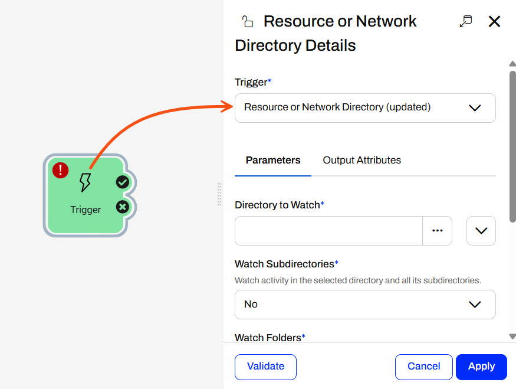
For the Directory to Watch parameter, Jennifer clicks the ellipsis button to browse the FME Flow Resources. She selects her newly created BuildingUpdates folder in the Data folder.
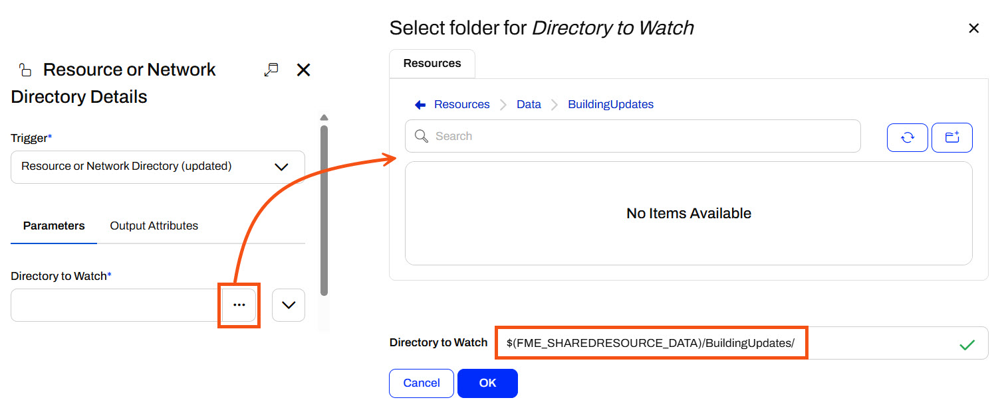
Jennifer leaves the Watch Subdirectories and Watch Folders parameters set to No since she only needs to monitor files directly in the BuildingUpdates folder. For the Event to Watch parameter, Jennifer deselects Delete to only watch for new files or file updates. She doesn't need to update the database if someone deletes files from this directory. Jennifer changes the Poll Interval to 5 seconds. Jennifer clicks the Validate button to ensure the trigger settings are valid.
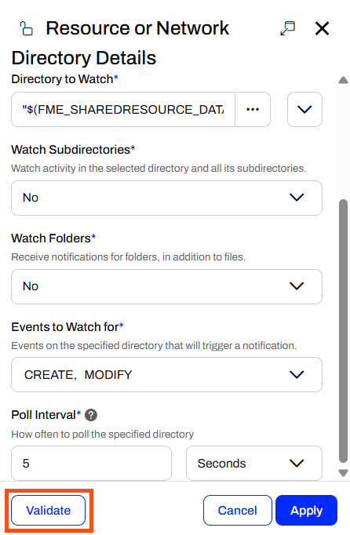
Once successfully validated, she clicks Apply to close the Resource or Network Directory Details.
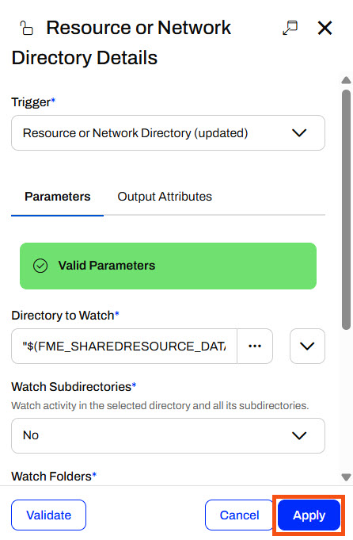
4) Log Message
Before Jennifer configures FME Flow to process the shapefile data with a workspace, she wants to ensure the trigger functions as she expects. Jennifer adds an internal action and connects it to the trigger success port. She opens the Action Details and sets a Log a message action.
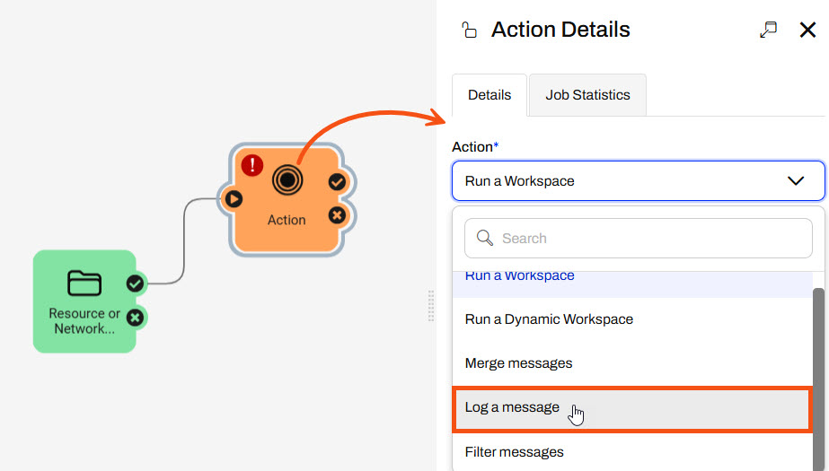
For Formatted Message, Jennifer clicks the drop-down options, expands Event, and selects Event as JSON. FME Flow will log the JSON message the trigger sends when FME Flow detects an updated or modified file in the BuildingUpdates folder.

Jennifer clicks Apply to save and close the Log Details.
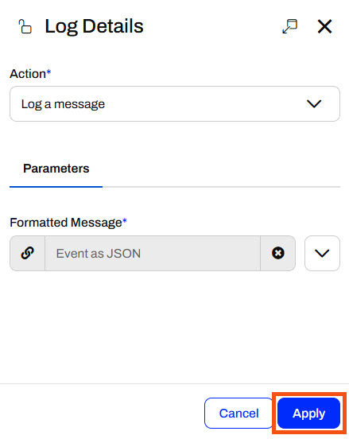
5) Start Automation in Debug Mode
Jennifer saves her Automation and names it Incoming Building Footprints.
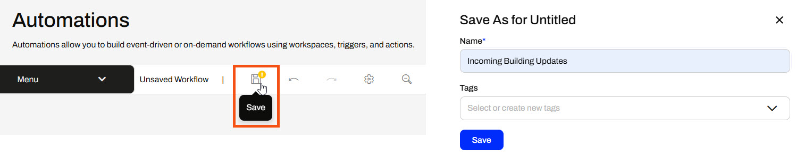
The FME Flow Automation must be running to monitor the BuildingUpdates folder actively for changes. Jennifer clicks Debug to start the Automation in Debug Mode to test whether the trigger functions as she expects.
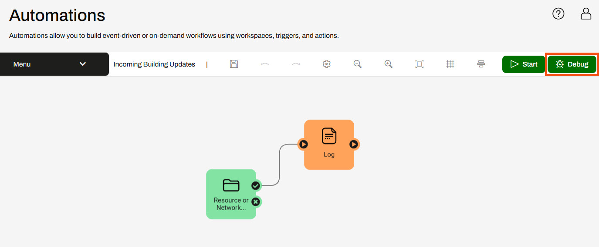
A warning pops up about running the Automation in debug mode; Jennifer clicks Debug to confirm and close the warning. The Automation canvas will update to show it is running in Debug Mode.
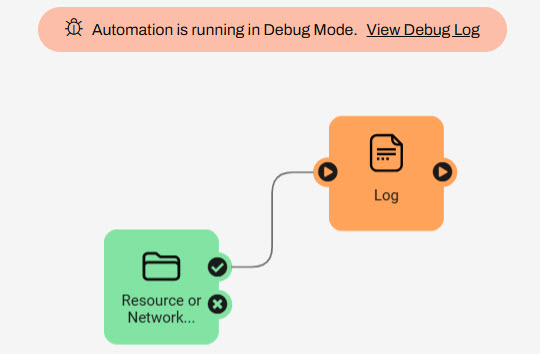
6) Test Automation
With the Automation running, Jennifer must add shapefiles to the BuildingUpdates folder to trigger the Automation. She navigates to Resources > Data > BuildingUpdates and selects Upload > Files.
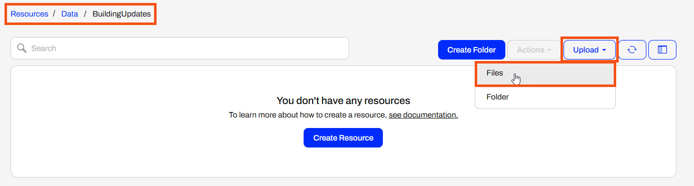
She uploads all files of the update001 shapefile (.dbf, .prj, .shp, .shx) to the folder from C:\FMEData\Data\Engineering\BuildingFootprints.
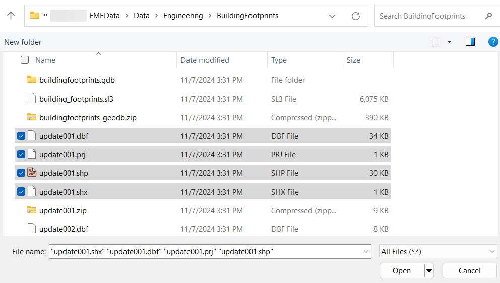
FME Flow uploads the files to the BuildingUpdates folder, triggering the Automation.
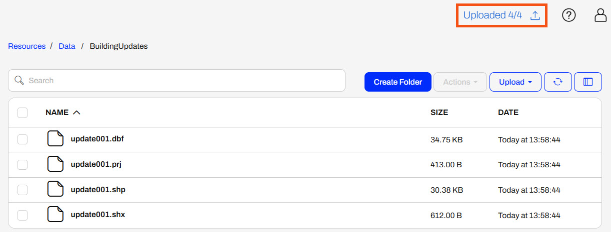
If you are not using a Safe Software training machine, you can download the source shapefile datasets, then upload one shapefile of updates to FME Flow.
Once the files are uploaded, Jennifer returns to the Incoming Building Footprints Automation. She expands the Menu and selects View Debug Log.

She checks for any CREATE messages in the log file and refreshes the log if needed. Jennifer sees four CREATE events triggered by the four shapefile files.
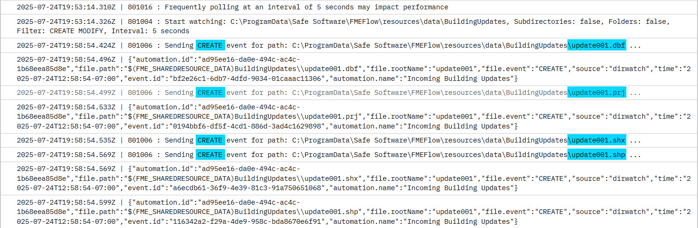
Now Jennifer knows the Resource or Network Directory Watch Trigger works! In the next exercise, she will process each shapefile with a workspace to update the geodatabase.